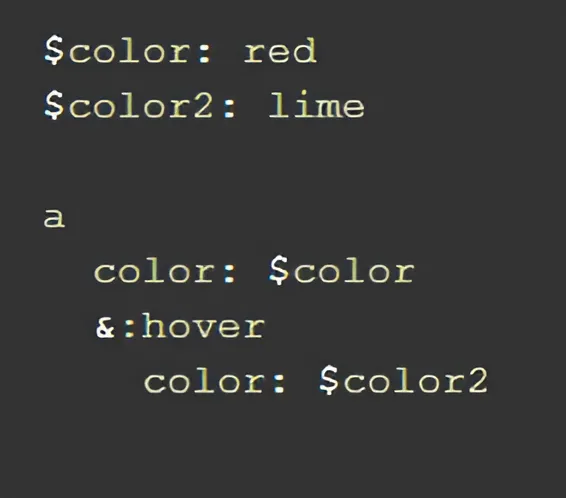
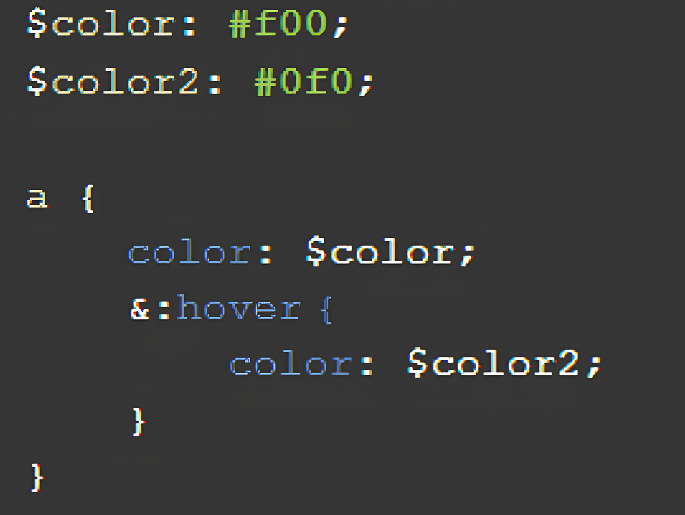
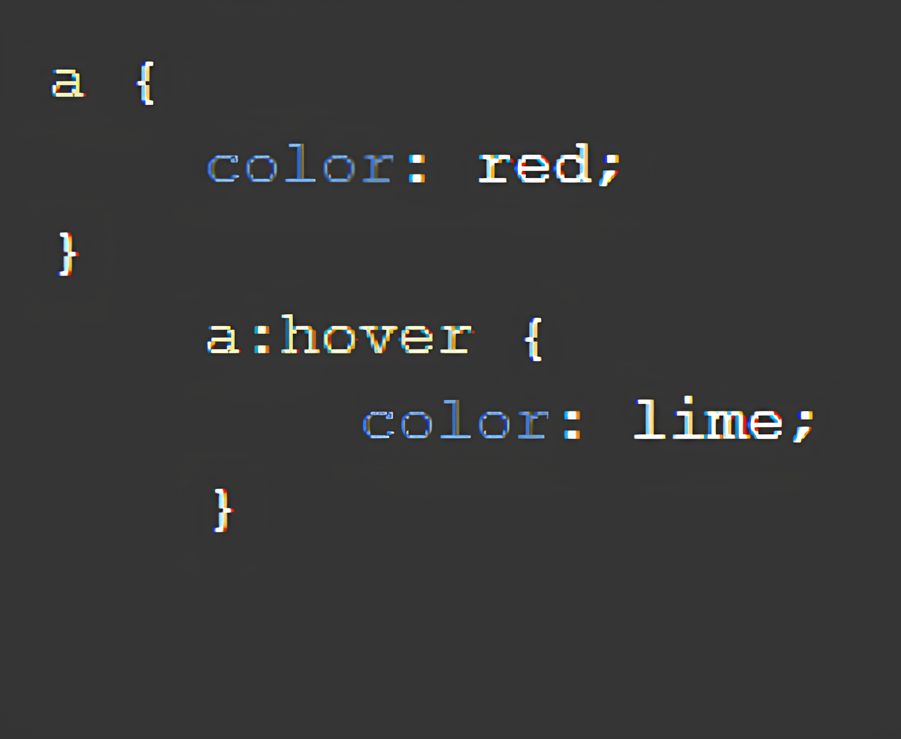
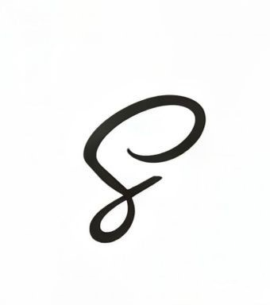
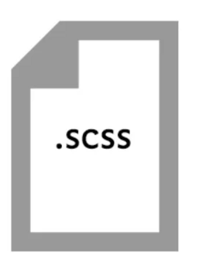

Небольшая история
Sass не динамичный язык. Он не позволяет генерировать или изменять CSS свойства и значения в реальном времени.
Но вы можете генерировать их более эффективным способом и внедрять в стандартные свойства.
Sass - это первая спецификация Sassy CSS.
Позже разработали альтернативный синтаксис, который некоторые считают лучшей версией языка, а также изменилось первоначальное расширение .sass на новое .scss.
На данный момент ни один браузер не поддерживает CSS препроцессоры напрямую.
Кроме того, используя препроцессор, вы должны будете установить его к себе на веб-сервер.
Примеры кода



Миксины позволяют создавать группы CSS-правил, которые можно повторно использовать в разных частях стилей.
Шаблонные селекторы используются для создания стилей, которые добавляются не напрямую, но могут быть расширены другими селекторами с помощью @extend.
Синтаксис


SASS - использует отступы для вложенности, не требует фигурных скобок и точек с запятой.
SCSS - ближе к стандартному CSS, использует фигурные скобки и точки с запятой.